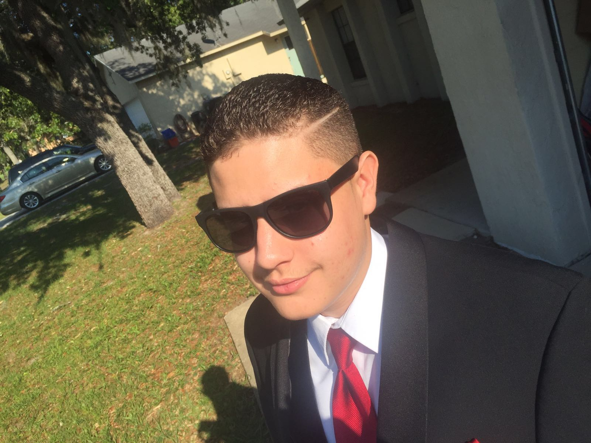

Welcome to my New Website
Hello there, and welcome to my new website Frank Diaz Studios, a website dedicated to show all my works of digital art and to use this as my personal portfolio for a future career. In here you'll find links that lead to my portfolio and contact pages, where you can take a look at my previous assignments and hopefully get in touch with me. Other than that, there's not much else to see, so enjoy.
About Me
I'm an ordinary guy who likes digital tech, pop culture, and dank memes. I started getting into web design and digital media around my Junior and Senior years at University High School. I was inspired to learn coding after playing a lot of my favorite game Minecraft, and since then I've had a passion for pursuing a career in game and web development. I started taking basic HTML and CSS classes as well as a Photoshop class and I enjoyed the experience of learning those subjects in those classes. I am currently a student at Valencia College East Campus where I'm taking classes in Digital Media Tech and Web Programming. In high school I learned basic HTML and CSS, and now in college I'm learning those two along with basic Javascript. My dream and goal is to hopefully graduate from Valencia so that I can move to UCF and take classes in game design and I plan to hopefully work one day in the video game and web development industry. I also plan on hopefully working on personal projects such as small sites and mods for games.